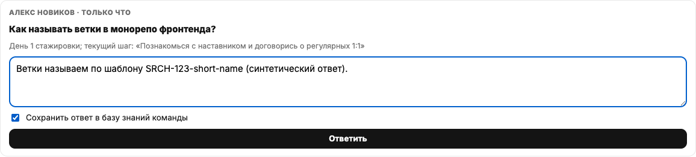
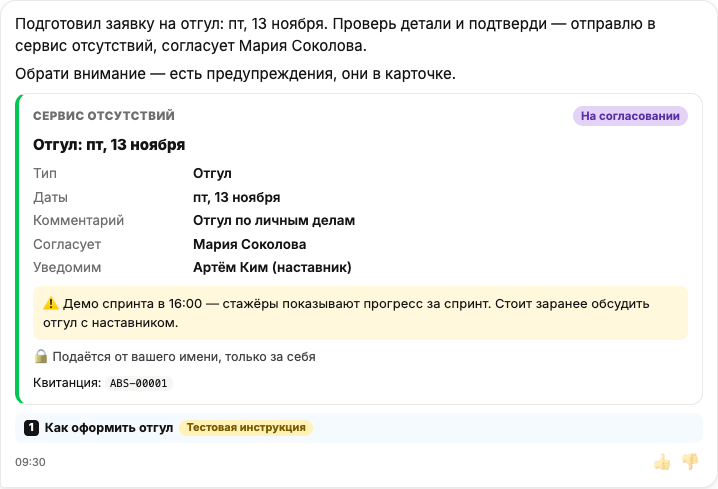
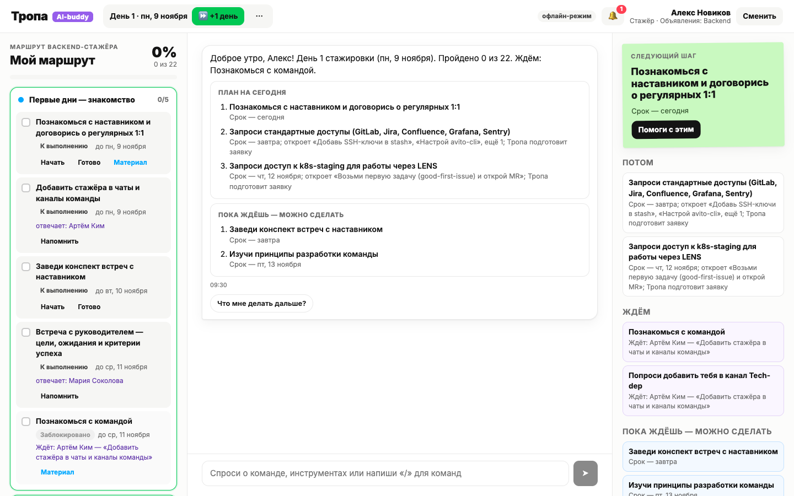
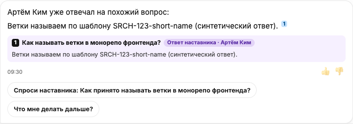
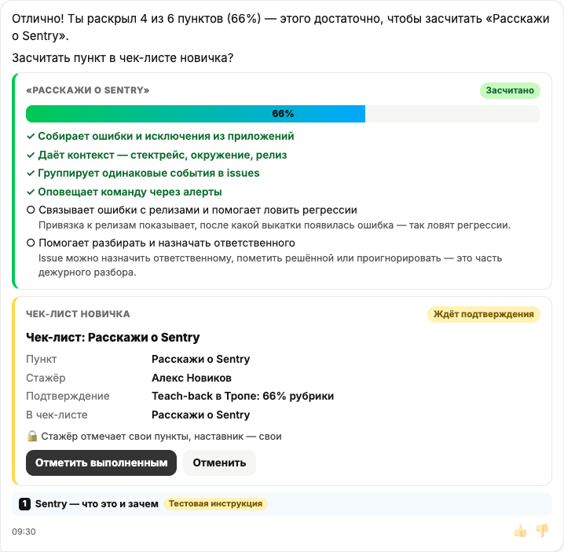
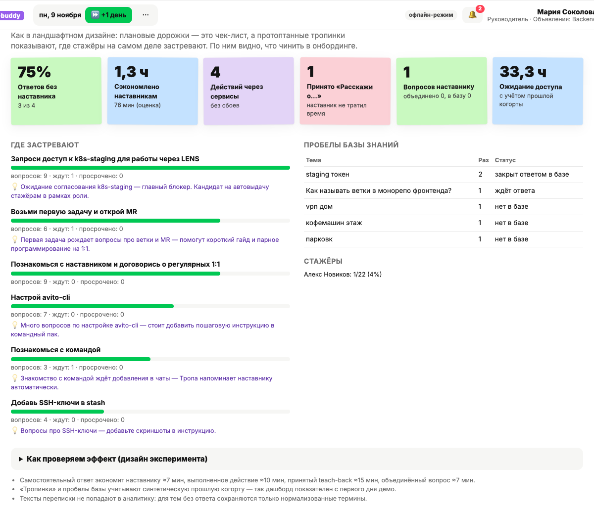

1. Сводка вопросов вместо прерываний: похожие объединены, ответ можно сразу сохранить в базу команды

Маршрут из чек-листа Авито · ответы только из разрешённых материалов · заявки в корпоративных сервисах через MCP — только после подтверждения · вопрос наставнику один раз, ответ — навсегда
git clone https://github.com/behavyIT/tropa-ai-buddycd tropa-ai-buddy && docker compose up --buildalex · artem · maria · olga, пароль buddy2026docker compose --profile test run --rm testsнаставника за 6-месячную программу
за 9-месячную программу
«Стажёру нужен отгул, но он не знает порядка и не уверен, стоит ли отвлекать руководителя»
пример из кейса
| Очевидный вариант: чат-бот по базе | Тропа |
|---|---|
| Отвечает, если спросили | Знает маршрут из 22 пунктов чек-листа Авито с зависимостями и сама предлагает следующий шаг |
| Даёт ссылку на инструкцию | Выполняет действие в сервисе (отгул, доступы, чек-лист) — только после клика «Подтвердить», с квитанцией |
| «Не знаю» — тупик | Передаёт вопрос наставнику в сводку; его ответ сохраняется и отвечает следующим стажёрам |
| Пересказывает документацию | Слушает стажёра: «Расскажи о Sentry» — проверка по рубрике и отметка в чек-листе |
| Видит всю базу | Видит только разрешённое роли и команде — права применяются до поиска |
| Нужен ключ LLM | Работает без LLM; с ключом Claude улучшает понимание и формулировки |
absence_create_request от имени стажёра с ключом идемпотентности → квитанция ABS-00001, «На согласовании». Мария согласует во вкладке «Согласования» → стажёр получает уведомление.




claude-opus-5-5 — по ключу, structured outputs| Есть в Авито | Как используется |
|---|---|
| Go, PostgreSQL, Redis | pgx, go-redis |
| React, TS, TanStack, Zustand, Zod | весь интерфейс |
| Авторизация, роли, данные сотрудников | тонкие адаптеры-имитации → SSO и API оргструктуры |
| ИИ-агенты + MCP | корпоративные сервисы — MCP-инструменты |
| ИИ-крон | бриф, напоминания, синхронизация статусов |
| Feature flags | сценарии по командам, A/B-запуск |
| Clickstream / Kafka | события в совместимом формате |
| Grafana, Docker, CI/CD | /metrics, Compose, GitHub Actions |
| Что пробовали | Что получили | Что выбрали |
|---|---|---|
| BM25 + бонус своей команде ×1,3 | 12/16 ответов из верного источника: «Что такое Sentry?» цитировал раздел про отгул; профильный документ проигрывал общему | стоп-слова, бонус команде ×1,15, бонус «документ про это» (доля IDF слов вопроса в заголовке) → 16/16 |
| Шаблон «что делать» → «что дальше» | «Что делать, если долго нет ревью?» уходило в маршрут | исключение для «если / когда / чтобы» → 49/49 интентов |
| Поиск систем подстрокой | «продукт» распознавался как «прод» — отказ в доступе к production | точное совпадение слова, префикс — только явно |
| e2e-прогон смены пользователя | после выхода интерфейс оставался у прежнего пользователя | сброс кэша при выходе + тест UI-13 |
| Рассматривали и не взяли | Почему | Вместо этого |
|---|---|---|
| Свободный LLM-агент с вызовом инструментов | для HR-действий нельзя гарантировать права и воспроизводимость | детерминированный оркестратор, LLM — языковой слой |
| Векторный поиск | нужны модель эмбеддингов и ключ, хуже объяснимость; корпус маленький | BM25 + права; гибридный поиск — в развитии |
| Обязательная LLM | эксперты без ключа не смогли бы проверить решение | офлайн-режим по умолчанию, Claude — опция |
| Отдельные приложения для наставника и руководителя | кейс их не требует, а поддержка дороже | вкладки в том же интерфейсе по роли |
| Метрика | Сейчас | Цель пилота | Как считаем |
|---|---|---|---|
| Дни до первого принятого MR (North Star) | замерить на контроле | ↓ 20% | трекер задач |
| Часы наставника за программу | 40–48 ч (кейс) | ≤ 32 ч | дневник + события |
| Рутинные обращения к наставнику в неделю | замерить | −40% | вопросы в сводке |
| Ответы без эскалации | — | ≥ 70% | события ответов |
| Медиана ожидания доступов | замерить | < 8 ч | сервис доступов |
| 👍 среди оценённых ответов | — | ≥ 80% | кнопки 👍/👎 |
| Утечки по правам | 0 в тестах | 0 | аудит событий |
Поэтапный запуск по командам через фича-флаги: команды без Тропы — контрольная группа. Малые когорты → сравнение медиан, бутстреп-интервалы. Метрики фиксируем до старта, раз в неделю короткий опрос стажёров, дневник времени наставника.
События в формате Clickstream → вкладка «Тропинки»: ответы без эскалации, действия, объединённые вопросы, пробелы базы знаний, места застревания. Тексты переписки в аналитику не попадают.
| Стажёр | Наставник | Руков. | HR BP | |
|---|---|---|---|---|
| Маршрут | свой | подопечных | команды | всех |
| Согласование | ✖ | ✖ | команды | ✖ |
| Сводка вопросов | ✖ | свои | команды | ✖ |
| «Тропинки» | ✖ | ✖ | команда | все |
| Документы для наставников | ✖ | ✔ | ✔ | ✔ |
| Production-базы | запрещено ролью | соглас. | соглас. | — |
| Инструмент | Сервис | Только чтение | Кто может (по делегированной идентичности) |
|---|---|---|---|
absence_create_request | Отсутствия | нет — через подтверждение | только за себя |
absence_get_request / absence_decide | Отсутствия | да / нет | владелец, согласующий, HR BP / руководитель команды |
calendar_team_events | Календарь | да | участник команды; отсутствие коллег — только числом |
access_catalog | Доступы | да | все |
access_create_request | Доступы | нет — через подтверждение | только за себя, с учётом роли |
access_get_request / access_decide | Доступы | да / нет | владелец, согласующий / руководитель команды |
checklist_complete_item / checklist_get | Чек-лист новичка | нет / да | стажёр, его наставник и руководитель |
Протокол MCP 2025-06-18: initialize, tools/list с аннотацией readOnlyHint, tools/call. Клиент: таймауты, повтор только транспортных ошибок (безопасно благодаря ключам идемпотентности), circuit breaker. В одном процессе — тот же протокол без сети.

| Что | Команда |
|---|---|
| Поднять стенд | docker compose up --build → localhost:8080 |
| Тесты и покрытие | docker compose --profile test run --rm tests |
| Без Docker | go run ./cmd/tropa (PostgreSQL в DATABASE_URL) |
| Замеры качества | EVAL_REPORT=1 go test ./internal/nlu ./internal/app -run EVAL |
| E2E и видео | make e2e · make video |
| С LLM | LLM_PROVIDER=anthropic ANTHROPIC_API_KEY=… |
| Документ | Где |
|---|---|
| Инструкция, тестовые данные, порядок проверки | README.md |
| SDD-спецификации (OpenSpec) | openspec/specs, TRACEABILITY.md |
| Отчёт о покрытии | coverage/summary.md, go.html, web/ |
| Замеры качества | docs/eval |
| Архитектура · безопасность · метрики | docs/architecture.md · security.md · metrics.md |
| Путь стажёра · сценарий демо | docs/user-journey.md · demo-script.md |
| Видео · презентация | docs/media · docs/presentation |